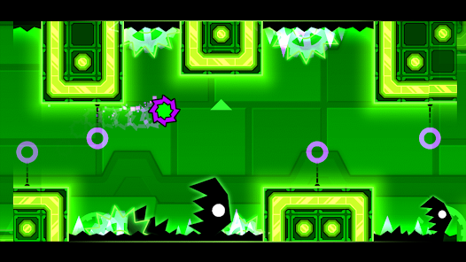

El Cub Geomètric
En Geometry Dash controles un petit cub que viatja a través de mons plens d'obstacles mortals. No té nom, però representa la perseverança i la precisió.
Un viatge a través del ritme i la geometria.
En Geometry Dash controles un petit cub que viatja a través de mons plens d'obstacles mortals. No té nom, però representa la perseverança i la precisió.
El món està format per formes geomètriques, trampes i plataformes que es mouen al ritme de la música. Cada nivell és un repte de reflexos i memòria.

La música no és només ambient: és part del joc. Saltar fora de ritme significa perdre. Només els jugadors més constants arriben al final.